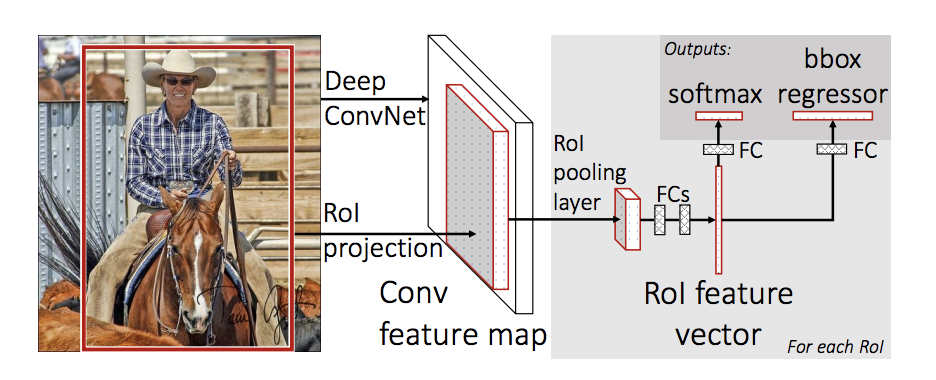
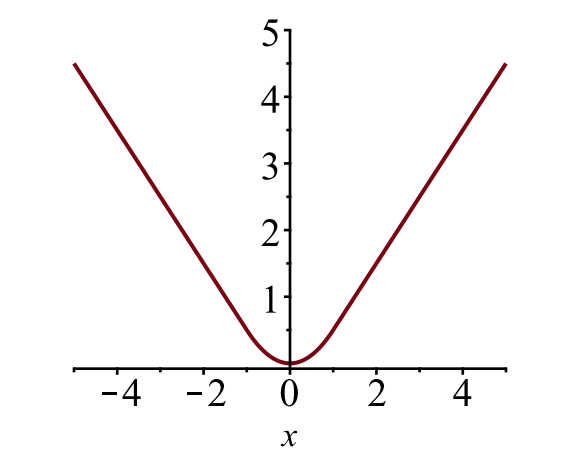

ROI Pooling
Network Architecture

- Instead of feeding the region proposals to the CNN, the author feeded the input image to the CNN to generate a convolutional feature map.
- From the convolutional feature map, the author identified the region of proposals and warp them into squares and by using a RoI pooling layer the author reshaped them into a fixed size so that it can be fed into a fully connected layer.
- From the RoI feature vector, the author used a softmax layer to predict the class of the proposed region and also the offset values for the bounding box.
Loss Function
The model is optimized for a loss combining two tasks (classification + localization):
| Symbol | Explanation |
|---|---|
| True class label, ; by convention, the catch-all background class has . | |
| Discrete probability distribution (per RoI) over K + 1 classes: , computed by a softmax over the K + 1 outputs of a fully connected layer. | |
| True bounding box . | |
| Predicted bounding box correction, . See here. |
The loss function sums up the cost of classification and bounding box prediction: . For "background" RoI, is ignored by the indicator function , defined as:
The overall loss function is:
The bounding box loss should measure the difference between and using a robust loss function. The smooth L1 loss is adopted here and it is claimed to be less sensitive to outliers.

Implenmentation
class SlowROIPool(nn.Module):
def __init__(self, output_size):
super().__init__()
self.maxpool = nn.AdaptiveMaxPool2d(output_size)
self.size = output_size
def forward(self, images, rois, roi_idx):
n = rois.shape[0]
h = images.size(2)
w = images.size(3)
x1 = rois[:,0]
y1 = rois[:,1]
x2 = rois[:,2]
y2 = rois[:,3]
x1 = np.floor(x1 * w).astype(int)
x2 = np.ceil(x2 * w).astype(int)
y1 = np.floor(y1 * h).astype(int)
y2 = np.ceil(y2 * h).astype(int)
res = []
for i in range(n):
img = images[roi_idx[i]].unsqueeze(0)
img = img[:, :, y1[i]:y2[i], x1[i]:x2[i]]
img = self.maxpool(img)
res.append(img)
res = torch.cat(res, dim=0)
return res
class RCNN(nn.Module):
def __init__(self):
super().__init__()
rawnet = torchvision.models.vgg16_bn(pretrained=True)
self.seq = nn.Sequential(*list(rawnet.features.children())[:-1])
# self.roipool = nn.MaxPool2d(kernel_size=(2, 2), stride=(2, 2), dilation=(1, 1))
self.roipool = SlowROIPool(output_size=(7, 7))
self.feature = nn.Sequential(*list(rawnet.classifier.children())[:-1])
_x = Variable(torch.Tensor(1, 3, 224, 224))
_r = np.array([[0., 0., 1., 1.]])
_ri = np.array([0])
_x = self.feature(self.roipool(self.seq(_x), _r, _ri).view(1, -1))
feature_dim = _x.size(1)
self.cls_score = nn.Linear(feature_dim, N_CLASS+1)
self.bbox = nn.Linear(feature_dim, 4*(N_CLASS+1))
self.cel = nn.CrossEntropyLoss()
self.sl1 = nn.SmoothL1Loss()
def forward(self, inp, rois, ridx):
res = inp
res = self.seq(res)
res = self.roipool(res, rois, ridx)
res = res.detach()
res = res.view(res.size(0), -1)
feat = self.feature(res)
cls_score = self.cls_score(feat)
bbox = self.bbox(feat).view(-1, N_CLASS+1, 4)
return cls_score, bbox
def calc_loss(self, probs, bbox, labels, gt_bbox):
loss_sc = self.cel(probs, labels)
lbl = labels.view(-1, 1, 1).expand(labels.size(0), 1, 4)
mask = (labels != 0).float().view(-1, 1).expand(labels.size(0), 4)
loss_loc = self.sl1(bbox.gather(1, lbl).squeeze(1) * mask, gt_bbox * mask)
lmb = 1.0
loss = loss_sc + lmb * loss_loc
return loss, loss_sc, loss_loc
Why faster than R-CNN?
The reason “Fast R-CNN” is faster than R-CNN is because you don’t have to feed 2000 region proposals to the convolutional neural network every time. Instead, the convolution operation is done only once per image and a feature map is generated from it.